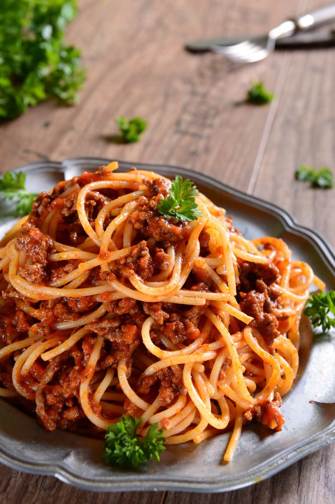

Italian Recipe
Ingredients
- 1 tbsp olive oil
- 4 rashers smoked streaky bacon, finely chopped
- 2 medium onions, finely chopped
- 2 carrots, trimmed and finely chopped
- 2 celery sticks, finely chopped
- 2 garlic cloves finely chopped
- 2-3 sprigs rosemary leaves picked and finely chopped
- 500g beef mince
Ingredients for the bolognese sauce
- 2 x 400g tins plum tomatoes
- small pack basil leaves picked, ¾ finely chopped and the rest left whole for garnish
- 1 tsp dried oregano
- 2 fresh bay leaves
- 2 tbsp tomato purée
- 1 beef stock cube
- 1 red chilli deseeded and finely chopped (optional)
- 125ml red wine
- 6 cherry tomatoes sliced in half
To season and serve
- 75g parmesan grated, plus extra to serve
- 400g spaghetti
- crusty bread to serve (optional)